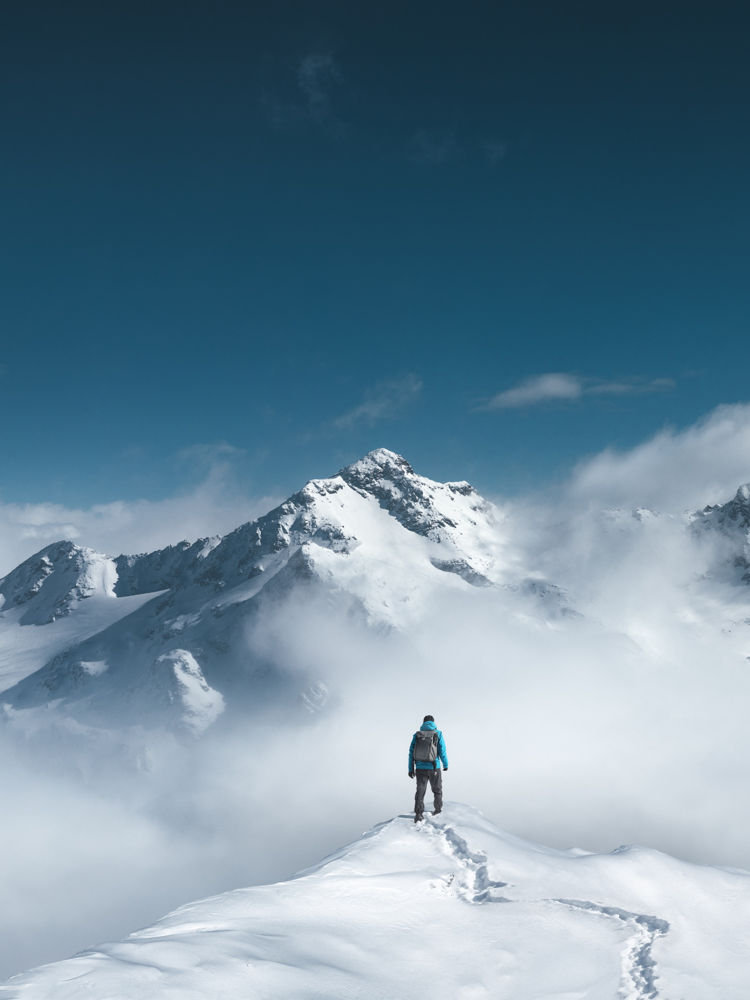

Die Berge sind ein Kraftort. Ein Symbol der Freiheit. Die Natur ist sehr präsent in den Bergen, in den gewaltigen Urkräften, die die Gebirge entstehen ließen. Gerade an solchen Orten kannst du die Verbindung zur Natur wieder aufbauen – kannst du die Verbindung zu dir selbst wieder aufbauen.
Wir alle vermissen die Verbindung zur Natur. Im Endeffekt ist es die Verbindung zu uns selbst, die uns abgeht. Wenn du nicht in Verbindung mit dir selbst bist, dann hörst du nicht auf deine Bedürfnisse, spürst du nicht, wenn sich eine Krankheit schon lange im Voraus ankündigt, ... Du merkst vielleicht das irgendwas nicht stimmt, aber du weißt nicht was. Wenn du wieder die Verbindung zu dir findest, wirst du dich wieder besser fühlen. Die Natur und die Berge helfen dir dabei, das zu erreichen.
Je höher der Berg, desto kälter ist die Luft, desto besser kannst du dich mit der Natur und mit dir verbinden. Je besser du dich mit dir verbinden kannst, desto besser wirkt ein Ritual.
